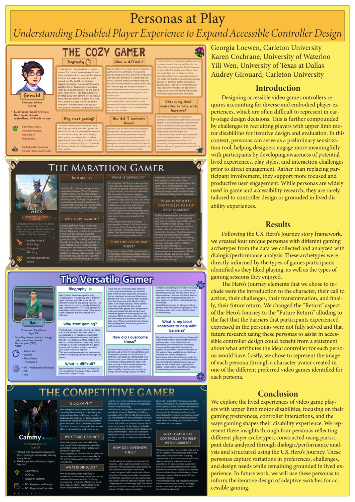

Accessible Adaptive Gaming Controllers for People with Motor Disabilities

Overview
This project looks at how people with upper-limb motor disabilities actually play video games, and builds controller prototypes that sense muscle activity and body motion instead of relying on button presses. The idea is to start from the movement a player already has rather than from a fixed off-the-shelf layout.
What I Built
I built the controller prototypes used in the project. Instead of asking a player to press buttons, the controller reads the body directly. Surface EMG (electromyography, the electrical signal a muscle gives off when it contracts) picks up an attempted movement even when the movement itself is small, and an IMU (inertial measurement unit, an accelerometer and gyroscope) tracks how the hand or arm is tilted and moved. Those two signals are mapped to game input, so a player can drive the game with whatever motion is available to them.
How We Made Sense of It
We interviewed players with upper-limb motor disabilities about how they game, what gets in the way, and what they work around. In order to compare the outcome of different analysis methods, the interviews were analyzed in two different ways, thematic analysis and dialogic and performance analysis. Reading the same material both ways gave us four player personas, the Cozy Gamer, the Marathon Gamer, the Versatile Gamer, and the Competitive Gamer, each with a different play style, a different set of barriers, and a different idea of what an ideal controller would be.
Resulting Publication
The study that grew out of this platform was published as a poster, “Personas at Play: Understanding Disabled Player Experience to Expand Accessible Controller Design” (Graphics Interface 2026), on which I am a co-author. The poster presents the four personas and the narrative-inquiry methods behind them. I also designed the poster and its persona figures.

Poster, Graphics Interface 2026 — full PDF.